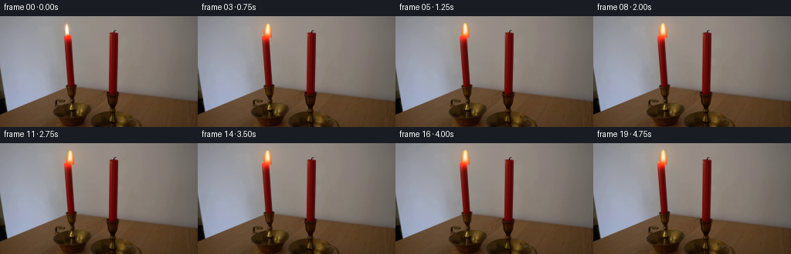
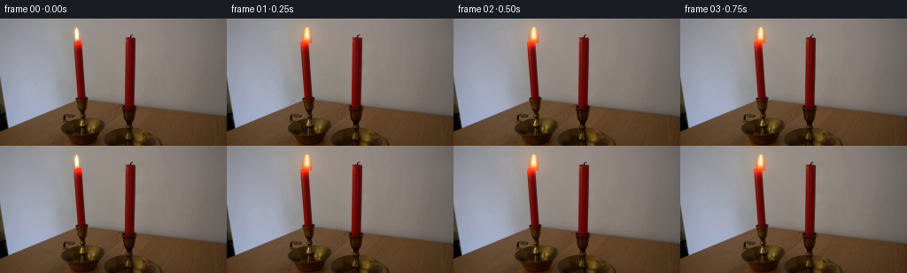
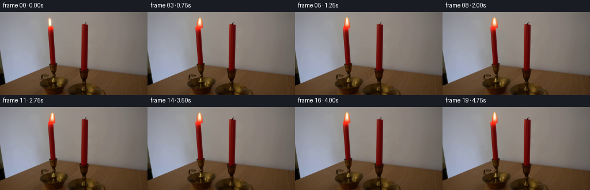
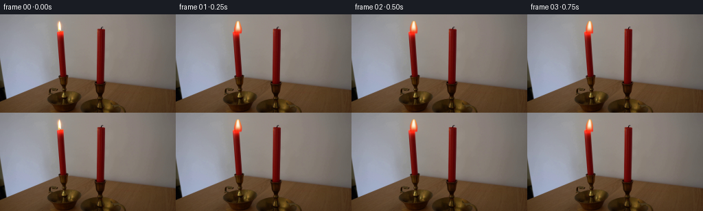

CODING AGENTS AS PIXEL WORLD MODELS
traex/DeepSeek-V4.1-Flash · 0093
点击播放 · 原生 RGB 像素
逐轮保存的候选
回放视频、检查图与代码变化。
每份候选均可单独播放。实际图片检查记录在下方工具轨迹中。
候选 01播放与检查图
点击播放 · 原生 RGB 像素


展开代码变化
--- 上一保存版本
+++ 本次保存版本
@@ -0,0 +1,161 @@
+"""Generate a five-second, locked-off candle scene from first_frame.png."""
+
+from pathlib import Path
+
+import numpy as np
+from PIL import Image
+
+import artifact_io
+
+
+WIDTH = 256
+HEIGHT = 144
+N_FRAMES = 20
+FPS = 4
+SUPERSAMPLE = 6
+
+
+def smoothstep(edge0, edge1, values):
+ """Smooth interpolation that also accepts reversed edges."""
+ x = np.clip((values - edge0) / (edge1 - edge0), 0.0, 1.0)
+ return x * x * (3.0 - 2.0 * x)
+
+
+def reconstruct_plate(source):
+ """Replace the original flame with a quiet continuation of the wall."""
+ plate = source.astype(np.float32)
+ y0, y1 = 4, 24
+ x0, x1 = 78, 102
+
+ # Interpolate the wall from both sides, then restore a little of its grain.
+ left = source[y0:y1, x0 - 2 : x0].mean(axis=1)
+ right = source[y0:y1, x1 : x1 + 2].mean(axis=1)
+ for y in range(y0, y1):
+ for x in range(x0, x1):
+ t = (x - x0 + 0.5) / (x1 - x0)
+ wall = left[y - y0] * (1.0 - t) + right[y - y0] * t
+ texture_x = min(x + 24, WIDTH - 1)
+ local = source[y, texture_x].astype(np.float32)
+ row_mean = source[y, texture_x - 1 : texture_x + 2].mean(axis=0)
+ grain = (local - row_mean) * 0.38
+ plate[y, x] = wall + grain
+
+ # A faint continuation of the dark wick is visible beneath the flame.
+ yy = np.arange(HEIGHT, dtype=np.float32)[:, None]
+ xx = np.arange(WIDTH, dtype=np.float32)[None, :]
+ wick = np.exp(-((xx - 89.7) / 0.72) ** 2) * smoothstep(21.5, 23.0, yy)
+ wick *= 1.0 - smoothstep(26.0, 27.4, yy)
+ plate = plate * (1.0 - 0.48 * wick[..., None])
+ plate += np.array([26.0, 17.0, 12.0], dtype=np.float32) * wick[..., None]
+ return np.clip(plate, 0.0, 255.0)
+
+
+def flame_parameters(time_s):
+ """Slow body sway plus small, independent flame-edge flutter."""
+ sway = (
+ 0.34 * np.sin(2.0 * np.pi * 0.43 * time_s + 0.45)
+ + 0.16 * np.sin(2.0 * np.pi * 1.17 * time_s + 1.85)
+ )
+ top = (
+ 8.65
+ + 0.48 * np.sin(2.0 * np.pi * 0.36 * time_s + 1.10)
+ + 0.22 * np.sin(2.0 * np.pi * 0.91 * time_s + 2.40)
+ )
+ width = 1.0 + 0.045 * np.sin(2.0 * np.pi * 0.57 * time_s + 0.20)
+ pulse = 0.82 + 0.18 * np.sin(2.0 * np.pi * 0.74 * time_s - 0.50)
+ return sway, top, width, pulse
+
+
+def render_flame(time_s):
+ """Return a supersampled RGBA flame layer and its low-resolution halo."""
+ sway, top_y, width_scale, pulse = flame_parameters(time_s)
+ base_y = 27.0
+ center_x = 90.0
+
+ sh = HEIGHT * SUPERSAMPLE
+ sw = WIDTH * SUPERSAMPLE
+ y = ((np.arange(sh, dtype=np.float32) + 0.5) / SUPERSAMPLE - 0.5)[:, None]
+ x = ((np.arange(sw, dtype=np.float32) + 0.5) / SUPERSAMPLE - 0.5)[None, :]
+
+ span = max(base_y - top_y, 8.0)
+ s = (base_y - y) / span
+ s_inside = np.clip(s, 0.0, 1.0)
+
+ # The flame is broader at its base and closes to a rounded point at the top.
+ profile = (1.0 - s_inside) ** 0.35
+ profile *= 0.84 + 0.16 * np.sin(np.pi * s_inside) ** 0.72
+ profile *= 1.0 + 0.035 * np.sin(2.0 * np.pi * (1.30 * s_inside - 0.72 * time_s))
+ half_width = 6.25 * profile * width_scale
+
+ bend = sway * (0.20 + 0.80 * s_inside)
+ bend += 0.20 * s_inside * np.sin(2.0 * np.pi * 0.61 * time_s + 1.7 * np.pi * s_inside)
+ center = center_x + bend
+ dx = x - center
+ d = np.abs(dx) / np.maximum(half_width, 0.055)
+
+ # Soft antialiased boundary and tapered ends keep the tiny flame photographic.
+ body = smoothstep(1.06, 0.91, d)
+ body *= smoothstep(-0.075, 0.035, s)
+ body *= smoothstep(1.025, 0.94, s)
+ body *= 1.0 - 0.08 * smoothstep(0.82, 1.0, d)
+
+ core = np.exp(-((d / 0.53) ** 4 + ((s_inside - 0.61) / 0.39) ** 4))
+ hot = np.exp(-((d / 0.84) ** 4 + ((s_inside - 0.49) / 0.58) ** 4))
+ base_red = smoothstep(0.30, 0.04, s_inside)
+
+ # Orange-red envelope, golden middle, and a nearly white hot core.
+ orange = np.empty((*d.shape, 3), dtype=np.float32)
+ orange[..., 0] = 255.0
+ orange[..., 1] = 55.0 + 150.0 * s_inside**1.45
+ orange[..., 2] = 13.0 + 47.0 * s_inside**1.7
+ gold = np.array([255.0, 211.0, 78.0], dtype=np.float32)
+ white = np.array([255.0, 252.0, 235.0], dtype=np.float32)
+ rgb = orange * (1.0 - 0.62 * hot[..., None])
+ rgb += gold * (0.62 * hot[..., None])
+ rgb = rgb * (1.0 - 0.90 * core[..., None]) + white * (0.90 * core[..., None])
+ rgb[..., 1] *= 1.0 - 0.20 * base_red
+ rgb[..., 2] *= 1.0 - 0.28 * base_red
+
+ alpha = body * (0.82 + 0.16 * core)
+ alpha = np.clip(alpha, 0.0, 1.0)
+ layer = np.dstack([rgb, alpha * 255.0]).astype(np.float32)
+
+ # Box-filter the layer back to the output resolution.
+ layer = layer.reshape(HEIGHT, SUPERSAMPLE, WIDTH, SUPERSAMPLE, 4).mean(axis=(1, 3))
+
+ yy = np.arange(HEIGHT, dtype=np.float32)[:, None]
+ xx = np.arange(WIDTH, dtype=np.float32)[None, :]
+ halo = np.exp(-(((xx - 90.0) / 14.5) ** 2 + ((yy - 17.0) / 15.5) ** 2))
+ halo += 0.32 * np.exp(-(((xx - 90.0) / 27.0) ** 2 + ((yy - 21.0) / 30.0) ** 2))
+ halo = np.clip(halo, 0.0, 1.0) * pulse
+ return layer, halo
+
+
+def make_frame(plate, time_s):
+ layer, halo = render_flame(time_s)
+
+ # Candlelight subtly warms the nearby wall and candle wax.
+ warm = np.array([24.0, 8.0, 1.5], dtype=np.float32)
+ lit = plate + halo[..., None] * warm
+
+ alpha = layer[..., 3:4] / 255.0
+ frame = lit * (1.0 - alpha) + layer[..., :3] * alpha
+ return np.clip(np.rint(frame), 0, 255).astype(np.uint8)
+
+
+def main():
+ case_dir = Path(__file__).resolve().parent
+ source = np.asarray(Image.open(case_dir / "first_frame.png").convert("RGB"))
+ assert source.shape == (HEIGHT, WIDTH, 3)
+
+ plate = reconstruct_plate(source)
+ frames = np.empty((N_FRAMES, HEIGHT, WIDTH, 3), dtype=np.uint8)
+ frames[0] = source
+ for index in range(1, N_FRAMES):
+ frames[index] = make_frame(plate, index / FPS)
+
+ artifact_io.save(frames, case_dir)
+
+
+if __name__ == "__main__":
+ main()
候选 02播放与检查图
点击播放 · 原生 RGB 像素


展开代码变化
--- 上一保存版本
+++ 本次保存版本
@@ -99,24 +99,24 @@
body *= smoothstep(1.025, 0.94, s)
body *= 1.0 - 0.08 * smoothstep(0.82, 1.0, d)
- core = np.exp(-((d / 0.53) ** 4 + ((s_inside - 0.61) / 0.39) ** 4))
- hot = np.exp(-((d / 0.84) ** 4 + ((s_inside - 0.49) / 0.58) ** 4))
+ core = np.exp(-((d / 0.47) ** 4 + ((s_inside - 0.65) / 0.34) ** 4))
+ hot = np.exp(-((d / 0.70) ** 4 + ((s_inside - 0.57) / 0.47) ** 4))
base_red = smoothstep(0.30, 0.04, s_inside)
# Orange-red envelope, golden middle, and a nearly white hot core.
orange = np.empty((*d.shape, 3), dtype=np.float32)
- orange[..., 0] = 255.0
- orange[..., 1] = 55.0 + 150.0 * s_inside**1.45
- orange[..., 2] = 13.0 + 47.0 * s_inside**1.7
- gold = np.array([255.0, 211.0, 78.0], dtype=np.float32)
- white = np.array([255.0, 252.0, 235.0], dtype=np.float32)
- rgb = orange * (1.0 - 0.62 * hot[..., None])
- rgb += gold * (0.62 * hot[..., None])
- rgb = rgb * (1.0 - 0.90 * core[..., None]) + white * (0.90 * core[..., None])
+ orange[..., 0] = 250.0
+ orange[..., 1] = 36.0 + 121.0 * s_inside**1.45
+ orange[..., 2] = 15.0 + 35.0 * s_inside**1.7
+ gold = np.array([255.0, 235.0, 155.0], dtype=np.float32)
+ white = np.array([255.0, 253.0, 242.0], dtype=np.float32)
+ rgb = orange * (1.0 - 0.72 * hot[..., None])
+ rgb += gold * (0.72 * hot[..., None])
+ rgb = rgb * (1.0 - 0.92 * core[..., None]) + white * (0.92 * core[..., None])
rgb[..., 1] *= 1.0 - 0.20 * base_red
rgb[..., 2] *= 1.0 - 0.28 * base_red
- alpha = body * (0.82 + 0.16 * core)
+ alpha = body * (0.85 + 0.13 * core)
alpha = np.clip(alpha, 0.0, 1.0)
layer = np.dstack([rgb, alpha * 255.0]).astype(np.float32)
@@ -127,7 +127,7 @@
xx = np.arange(WIDTH, dtype=np.float32)[None, :]
halo = np.exp(-(((xx - 90.0) / 14.5) ** 2 + ((yy - 17.0) / 15.5) ** 2))
halo += 0.32 * np.exp(-(((xx - 90.0) / 27.0) ** 2 + ((yy - 21.0) / 30.0) ** 2))
- halo = np.clip(halo, 0.0, 1.0) * pulse
+ halo = np.clip(halo, 0.0, 1.0) * pulse * 0.48
return layer, halo
@@ -135,7 +135,7 @@
layer, halo = render_flame(time_s)
# Candlelight subtly warms the nearby wall and candle wax.
- warm = np.array([24.0, 8.0, 1.5], dtype=np.float32)
+ warm = np.array([15.0, 5.0, 0.8], dtype=np.float32)
lit = plate + halo[..., None] * warm
alpha = layer[..., 3:4] / 255.0
可观测工具轨迹
实际执行的命令与返回图片。
命令 1exit 0
/bin/bash -c "pwd && rg --files -g '"'!*.git*'"' | sed -n '1,160p'"
命令 2exit 0
/bin/bash -c "sed -n '1,240p' prompt.txt"
命令 3exit 0
/bin/bash -c "sed -n '1,280p' GENERATION_RULES.md"
命令 4exit 0
/bin/bash -c 'file first_frame.png && identify first_frame.png 2>/dev/null || true && ls -lah'
命令 5exit 0
/bin/bash -c "python3 - <<'PY'
from PIL import Image
import numpy as np
im=Image.open('first_frame.png')
print(im.mode, im.size)
a=np.asarray(im)
print(a.shape,a.dtype,a.min(),a.max())
for y in range(0,144,12):
row=[]
for x in range(0,256,16):
b=a[y:y+12,x:x+16].mean((0,1)).astype(int)
row.append('%02x%02x%02x'%tuple(b))
print(f'{y:3d}', ' '.join(row))
PY"命令 6exit 0
/bin/bash -c "python3 - <<'PY'
from PIL import Image
import numpy as np
A=np.asarray(Image.open('first_frame.png')).astype(float)
# 128x72 downsample blocks
for y in range(0,144,2):
s=''
for x in range(0,256,2):
b=A[y:y+2,x:x+2].mean((0,1))
r,g,bl=b
mx=max(b); mn=min(b); sat=(mx-mn)/(mx+1)
if r>g*1.4 and r>bl*1.3 and r>65: c='R'
elif r>g*1.18 and r>bl*1.12 and r>45: c='r'
elif sat<.08 and mx<35:c='@'
elif sat<.10 and mx<75:c='#'
elif sat<.12 and mx<125:c='O'
elif sat<.14 and mx<175:c='o'
elif sat<.17:c='.'
elif r>g*1.08 and g>bl*1.03 and mx<115:c='w'
else:c='+'
s+=c
print(s.rstrip())
PY"命令 7exit 0
/bin/bash -c "python3 - <<'PY'
from PIL import Image
import numpy as np
A=np.asarray(Image.open('first_frame.png')).astype(int)
# report strong non-grey / bright pixels in upper half grouped by connected components
mx=A.max(2); mn=A.min(2); sat=mx-mn
mask=(sat>25)&(mx>50)&(np.indices(mx.shape)[0]<90)
# simple cc
from scipy.ndimage import label, find_objects
L,n=label(mask)
for i,sl in enumerate(find_objects(L),1):
if sl is None: continue
ys,xs=sl; area=(L[sl]==i).sum()
if area>=3:
pix=A[sl][L[sl]==i]
print(i,area,(xs.start,ys.start,xs.stop-1,ys.stop-1),'mean',pix.mean(0).astype(int),'max',pix.max(0))
PY"命令 8exit 0
/bin/bash -c "python3 - <<'PY'
from PIL import Image
import numpy as np
A=np.asarray(Image.open('first_frame.png')).astype(int)
def ch(p):
r,g,b=p
if max(p)>220 and g>170 and r>200:return 'F' # flame bright
if r>150 and g>70 and b<70:return 'Y'
if r>100 and r>g*1.8 and r>b*1.5:return 'R'
if r>70 and r>g*1.35 and r>b*1.25:return 'r'
mx=max(p);mn=min(p)
if mx<25:return '@'
if mx<55:return '#'
if mx<85:return 'D'
if mx<115:return 'd'
if mx<150:return 'o'
if mx<190:return '.'
return ' '
print('LEFT x76..104 y0..95')
for y in range(0,96):
print(f'{y:02d}', ''.join(ch(A[y,x]) for x in range(76,105)))
PY"命令 9exit 0
/bin/bash -c "python3 - <<'PY'
from PIL import Image
import numpy as np
A=np.asarray(Image.open('first_frame.png')).astype(int)
def ch(p):
r,g,b=p
if max(p)>235 and g>190 and r>220:return 'F'
if r>150 and g>70 and b<80:return 'Y'
if r>95 and r>g*1.7 and r>b*1.45:return 'R'
if r>65 and r>g*1.30 and r>b*1.20:return 'r'
mx=max(p);mn=min(p)
if mx<25:return '@'
if mx<55:return '#'
if mx<85:return 'D'
if mx<115:return 'd'
if mx<150:return 'o'
if mx<190:return '.'
return ' '
print('RIGHT x134..159 y0..96')
for y in range(0,97):
print(f'{y:02d}', ''.join(ch(A[y,x]) for x in range(134,160)))
PY"命令 10exit 0
/bin/bash -c "sed -n '1,260p' artifact_io.py"
命令 11exit 0
/bin/bash -c "sed -n '1,260p' player_template.html"
命令 12exit 0
/bin/bash -c "python3 - <<'PY'
from PIL import Image
import numpy as np
A=np.asarray(Image.open('first_frame.png')).astype(int)
for y in range(6,31):
vals=[]
for x in range(80,100):
r,g,b=A[y,x]
vals.append(f'{r:3d},{g:3d},{b:3d}')
print(f'y={y:02d}: '+' | '.join(vals))
PY"命令 13exit 1
/bin/bash -c 'python3 generate.py'
命令 14exit 0
/bin/bash -c 'python3 generate.py'
命令 15exit 0
/bin/bash -c "python3 - <<'PY'
from PIL import Image
import numpy as np
src=np.asarray(Image.open('first_frame.png').convert('RGB'))
a=np.stack([np.asarray(Image.open(f'frames/{i:02d}.png')).astype(int) for i in range(20)])
print('shape',a.shape,'dtype',a.dtype,'frame0 exact',np.array_equal(a[0],src))
print('global min/max',a.min(),a.max())
# changed pixel counts and ROI diff metrics
for i in range(20):
d=np.abs(a[i]-a[0]).max(2)
print(f'{i:02d} changed={np.count_nonzero(d):4d} roi_changed={np.count_nonzero(d[5:45,75:110]):4d} max={d.max():3d} meanROI={d[5:45,75:110].mean():5.2f}')
# bright / saturated bounds per frame around left flame
for i in range(20):
r,g,b=a[i,:, :,0],a[i,:, :,1],a[i,:, :,2]
mask=(r>180)&(g>60)&(r>g*1.4)
ys,xs=np.where(mask)
m=(ys<45)&(xs<125)
ys,xs=ys[m],xs[m]
print('bbox',i,(xs.min(),ys.min(),xs.max(),ys.max()),'brightmax',a[i].max())
PY"命令 16exit 0
/bin/bash -c "python3 - <<'PY'
from PIL import Image
import numpy as np
A=np.stack([np.asarray(Image.open(f'frames/{i:02d}.png')).astype(int) for i in range(20)])
def ch(p):
r,g,b=p
if max(p)>245 and g>235:return 'W'
if max(p)>235 and g>180:return 'F'
if r>220 and g>125 and b<115:return 'Y'
if r>150 and r>g*1.45 and r>b*1.3:return 'R'
if r>80 and r>g*1.25 and r>b*1.15:return 'r'
mx=max(p);mn=min(p)
if mx<25:return '@'
if mx<55:return '#'
if mx<85:return 'D'
if mx<115:return 'd'
if mx<150:return 'o'
if mx<190:return '.'
return ' '
for f in [0,1,4,8,12,16,19]:
print('\\nFRAME',f,'x78..104 y5..33')
for y in range(5,34):print(f'{y:02d}',''.join(ch(A[f,y,x]) for x in range(78,105)))
PY"命令 17exit 0
/bin/bash -c "python3 - <<'PY'
from PIL import Image
import numpy as np
A=np.asarray(Image.open('frames/08.png')).astype(int)
S=np.asarray(Image.open('first_frame.png')).astype(int)
for name,arr in [('orig',S),('gen',A)]:
print(name)
for y in range(7,26):
print(f'{y:02d}', ' '.join(f'{r:3d}/{g:3d}/{b:3d}' for r,g,b in arr[y,84:97]))
PY"命令 18exit 0
/bin/bash -c "python3 generate.py && python3 - <<'PY'
from PIL import Image
import numpy as np
S=np.asarray(Image.open('first_frame.png').convert('RGB'))
A=np.stack([np.asarray(Image.open(f'frames/{i:02d}.png')).astype(np.int16) for i in range(20)])
print('frame0 exact:',np.array_equal(A[0],S),'range:',A.min(),A.max())
for i in range(20):
d=np.abs(A[i]-S).max(2)
print(f'{i:02d} changed={np.count_nonzero(d):4d} roi={np.count_nonzero(d[5:45,75:110]):4d} roiMean={d[5:45,75:110].mean():5.2f} max={d.max()}')
# compare color signatures
for i in range(20):
roi=A[i,8:28,80:101]
hot=(roi[...,0]>235)&(roi[...,1]>180)
orange=(roi[...,0]>180)&(roi[...,1]<130)
print('sig',i,'hot',hot.sum(),'orange',orange.sum())
PY"命令 19exit 0
/bin/bash -c "python3 - <<'PY'
from PIL import Image
import numpy as np
A=np.stack([np.asarray(Image.open(f'frames/{i:02d}.png')).astype(float) for i in range(20)])
# motion of flame center and area using red/orange mask within x75:110 y5:35
for i in range(20):
r=A[i,:,:,0];g=A[i,:,:,1];b=A[i,:,:,2]
yy,xx=np.indices(r.shape)
m=(r>180)&(r>g*1.45)&(r>b*1.2)&(yy<36)&(xx>75)&(xx<110)
w=np.maximum(r-g,0)*m
print(i,'area',m.sum(),'cx',round((w*xx).sum()/w.sum(),2),'cy',round((w*yy).sum()/w.sum(),2),'top',np.where(m)[0].min())
PY"命令 20exit 0
/bin/bash -c "python3 - <<'PY'
from PIL import Image
import numpy as np
A=np.asarray(Image.open('first_frame.png')).astype(int)
# edges around flame body and transition colors. print region as color intensity codes based on red excess and brightness
for y in range(8,27):
s=''
for x in range(78,103):
r,g,b=A[y,x]; e=r-(g+b)/2
if r>240 and g>235: c='W'
elif e>180 and g>160:c='H'
elif e>170:c='R'
elif e>110:c='O'
elif e>55:c='o'
elif e>20:c='+'
elif max(r,g,b)<80:c='@'
elif max(r,g,b)<130:c='#'
elif max(r,g,b)<170:c='.'
else:c=' '
s+=c
print(f'{y:02d}',s)
PY"命令 21exit 0
/bin/bash -c "python3 - <<'PY'
from PIL import Image
import numpy as np
for f in [0,1,8,19]:
A=np.asarray(Image.open(f'frames/{f:02d}.png')).astype(int)
print('\\nFRAME',f)
for y in range(8,27):
s=''
for x in range(78,103):
r,g,b=A[y,x]; e=r-(g+b)/2
if r>240 and g>235: c='W'
elif e>180 and g>160:c='H'
elif e>170:c='R'
elif e>110:c='O'
elif e>55:c='o'
elif e>20:c='+'
elif max(r,g,b)<80:c='@'
elif max(r,g,b)<130:c='#'
elif max(r,g,b)<170:c='.'
else:c=' '
s+=c
print(f'{y:02d}',s)
PY"命令 22exit 0
/bin/bash -c "python3 - <<'PY'
from PIL import Image
import numpy as np
A=np.asarray(Image.open('first_frame.png')).astype(float)
# median / regression in unoccluded wall area estimate relation channels
ys,xs=np.indices((A.shape[0],A.shape[1]))
roi=(ys>=0)&(ys<45)&(xs>=60)&(xs<125)&~((xs>=78)&(xs<102)&(ys>=4)&(ys<27))
v=A[roi]
print('n',len(v),'means',v.mean(0),'med',np.median(v,0))
print('channel diff std',v.std(0))
# rows mean x60-77 vs x102-125
for y in range(0,45,4):
print(y, A[y,60:78].mean(0).round(1), A[y,102:125].mean(0).round(1))
PY"命令 23exit 0
/bin/bash -c "python3 - <<'PY'
from PIL import Image
import numpy as np
A=np.asarray(Image.open('frames/08.png')).astype(int)
for y in range(7,28):
print(y, [tuple(A[y,x]) for x in range(84,97)])
PY"命令 24exit 0
/bin/bash -c "python3 - <<'PY'
from PIL import Image
import numpy as np, json, re
# Inspect candidate montage geometry and player payload integrity.
inspection=Image.open('inspection.png')
print('inspection',inspection.size,inspection.mode)
html=open('index.html').read()
m=re.search(r'const DATA=(\\{.*?\\}),W=',html)
print('player data present',bool(m),'html bytes',len(html))
if m:
d=json.loads(m.group(1)); print('player',d['width'],d['height'],d['frames'],d['fps'],'deltas',len(d['deltas']))
# Check frames are valid and the static scene outside the candle area is unchanged.
S=np.asarray(Image.open('first_frame.png').convert('RGB')).astype(np.int16)
A=np.stack([np.asarray(Image.open(f'frames/{i:02d}.png')).astype(np.int16) for i in range(20)])
outside=np.ones((144,256),bool); outside[3:30,76:104]=False
d=np.abs(A-S).max(3)
print('outside candle max diff',d[:,outside].max(),'pixels',np.count_nonzero(d[:,outside]))
# Validate no clipping artifacts in interior around flame.
print('frame0 identity',np.array_equal(A[0],S))
print('bright frame counts',[(i,int(((A[i,:,:,0]>245)&(A[i,:,:,1]>225)).sum())) for i in range(0,20,4)])
PY"命令 25exit 1
/bin/bash -c "python3 - <<'PY'
from PIL import Image
import numpy as np
S=np.asarray(Image.open('first_frame.png').convert('RGB')).astype(np.int16)
A=np.stack([np.asarray(Image.open(f'frames/{i:02d}.png')).astype(np.int16) for i in range(20)])
d=np.abs(A-S).max(3)
# locate all differences beyond intended local area
ys,xs=np.where(d[1:]>0)
print('all changed bounds x,y:',xs.min(),xs.max(),ys.min()+1,ys.max()+1)
# count changes by coarse zones
for name,(y0,y1,x0,x1) in {'flame':(0,35,75,110),'leftcandle':(24,96,78,102),'rightcandle':(20,98,140,155),'table':(95,144,0,256),'other':(0,144,0,256)}.items():
m=d[:,y0:y1,x0:x1]
print(name,'changed',np.count_nonzero(m),'mean',m.mean())
PY"命令 26exit 0
/bin/bash -c "python3 - <<'PY'
from PIL import Image
import numpy as np
S=np.asarray(Image.open('first_frame.png').convert('RGB')).astype(np.int16)
A=np.stack([np.asarray(Image.open(f'frames/{i:02d}.png')).astype(np.int16) for i in range(20)])
d=np.abs(A-S).max(3)
idx=np.argwhere(d[1:]>0)
print('all changed bounds x,y:',idx[:,2].min(),idx[:,2].max(),idx[:,1].min()+1,idx[:,1].max()+1)
for name,(y0,y1,x0,x1) in {'flame':(0,35,75,110),'leftcandle':(24,96,78,102),'rightcandle':(20,98,140,155),'table':(95,144,0,256),'full':(0,144,0,256)}.items():
m=d[:,y0:y1,x0:x1]
print(name,'changed',np.count_nonzero(m),'mean',m.mean())
PY"命令 27exit 1
/bin/bash -c "python3 -m py_compile generate.py && python3 - <<'PY'
from PIL import Image
import numpy as np, re, json, base64
html=open('index.html').read()
d=json.loads(re.search(r'const DATA=(\\{.*?\\}),W=',html).group(1))
def unpack(s):
b=np.frombuffer(base64.b64decode(s),dtype='<u4').copy(); return b
f=unpack(d['first'])
recon=[f.copy()]
for delta in d['deltas']:
g=f.copy(); p=unpack(delta); i=0
while i<len(p):
start,count=int(p[i]),int(p[i+1]); i+=2
g[start:start+count]=p[i:i+count]; i+=count
recon.append(g); f=g
ref=np.load('pixels.npz')['pixels']
# pixels.npz is H,W,N packed; compare player reconstruction after transpose.
ok=True
for i,g in enumerate(recon):
h,w,n=g.reshape(144,256).T
ok &= np.array_equal(h,ref[:,:,i])
print('delta reconstruction exact:',bool(ok))
print('files: generate.py, pixels.npz, index.html, frames/00.png..19.png, inspection.png')
PY"命令 28exit 0
/bin/bash -c "python3 - <<'PY'
from PIL import Image
import numpy as np, re, json, base64
html=open('index.html').read()
d=json.loads(re.search(r'const DATA=(\\{.*?\\}),W=',html).group(1))
def unpack(s):
return np.frombuffer(base64.b64decode(s),dtype='<u4').copy()
f=unpack(d['first'])
recon=[f.copy()]
for delta in d['deltas']:
g=f.copy(); p=unpack(delta); i=0
while i<len(p):
start,count=int(p[i]),int(p[i+1]); i+=2
g[start:start+count]=p[i:i+count]; i+=count
recon.append(g); f=g
ref=np.load('pixels.npz')['pixels']
print('npz shape',ref.shape)
ok=True
for i,g in enumerate(recon):
ok &= np.array_equal(g.reshape(256,144).T,ref[:,:,i])
print('delta reconstruction exact:',bool(ok))
print('expected frames',len(recon),'fps',d['fps'])
PY"命令 29exit 0
/bin/bash -c "python3 - <<'PY'
from PIL import Image
import numpy as np, re, json, base64
html=open('index.html').read(); d=json.loads(re.search(r'const DATA=(\\{.*?\\}),W=',html).group(1))
def unpack(s): return np.frombuffer(base64.b64decode(s),dtype='<u4').copy()
f=unpack(d['first']); ref=np.load('pixels.npz')['pixels']; ok=[]
for i in range(20):
if i:
p=unpack(d['deltas'][i-1]); j=0
while j<len(p):
s,c=int(p[j]),int(p[j+1]); j+=2; f[s:s+c]=p[j:j+c]; j+=c
# packed shape row-major: W,H then transpose
ok.append(np.array_equal(f.reshape(256,144).T,ref[:,:,i]))
print(ok)
print('ref0 first packed',ref[0,:3,0],'f',f[:3])
PY"命令 30exit 0
/bin/bash -c "python3 - <<'PY'
from PIL import Image
import numpy as np, re, json, base64
html=open('index.html').read(); d=json.loads(re.search(r'const DATA=(\\{.*?\\}),W=',html).group(1))
def unpack(s): return np.frombuffer(base64.b64decode(s),dtype='<u4').copy()
f=unpack(d['first']); ref=np.load('pixels.npz')['pixels']; ok=[]
for i in range(20):
if i:
p=unpack(d['deltas'][i-1]); j=0
while j<len(p):
s,c=int(p[j]),int(p[j+1]); j+=2; f[s:s+c]=p[j:j+c]; j+=c
ok.append(np.array_equal(f.reshape(144,256),ref[:,:,i]))
print('delta reconstruction exact:',all(ok),ok)
# convert first to RGB compare
p=f.reshape(144,256); rgb=np.stack([(p>>16)&255,(p>>8)&255,p&255],axis=-1).astype('uint8')
print('frame0 image identity:',np.array_equal(rgb,np.asarray(Image.open('first_frame.png').convert('RGB'))))
PY"命令 31exit 0
/bin/bash -c "python3 - <<'PY'
from PIL import Image
import numpy as np,re,json,base64
D=json.loads(re.search(r'const DATA=(\\{.*?\\}),W=',open('index.html').read()).group(1))
p=np.frombuffer(base64.b64decode(D['first']),dtype='<u4').reshape(144,256)
rgb=np.stack([(p>>16)&255,(p>>8)&255,p&255],-1).astype(np.uint8)
src=np.asarray(Image.open('first_frame.png').convert('RGB'))
print(src.shape,rgb.shape,np.array_equal(src,rgb),np.abs(src.astype(int)-rgb.astype(int)).max())
print(src[0,0],rgb[0,0],src[0,1],rgb[0,1])
PY"保存候选 2 份；完成命令 31 次；可验证图片返回 0 张。原始 API 响应与完整日志保留在本地。